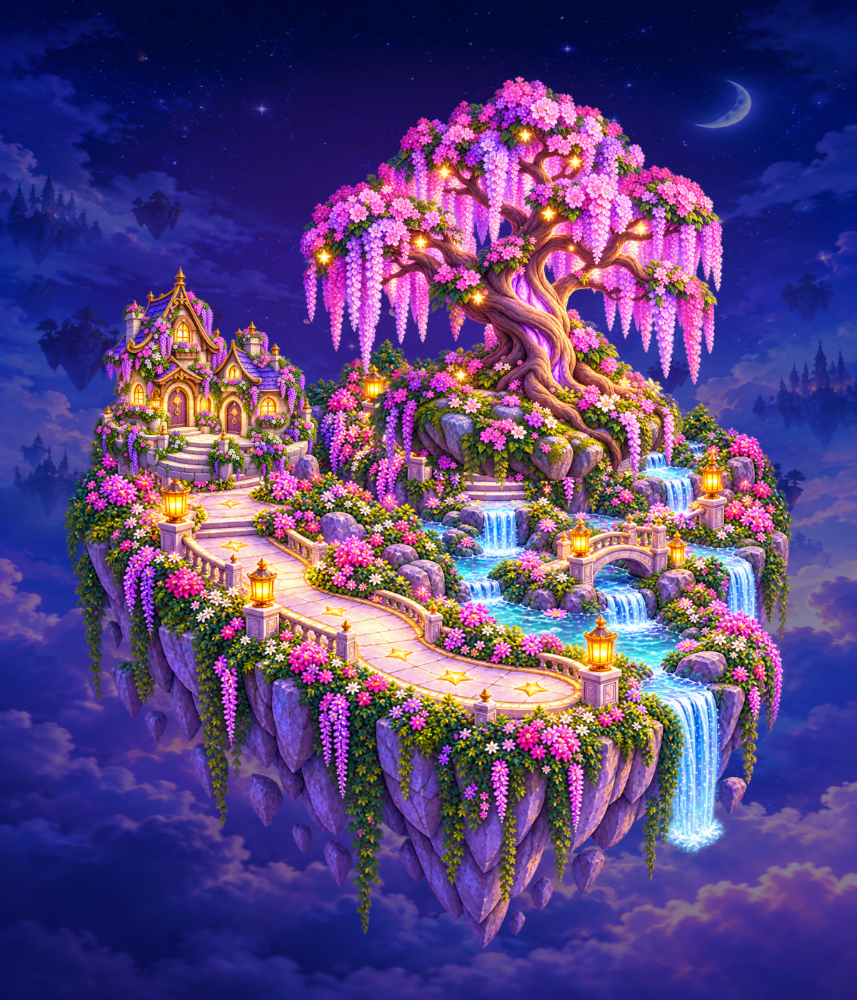
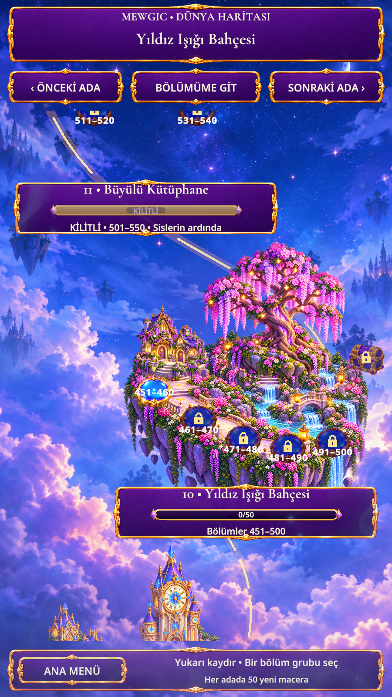

Gerçek proje referansı ve gerçek Unity çıktıları. Pembe/mor çiçekli uçan ada, ayrı büyük ışıklı ağaç ve çiçekli evler, altın fenerler, yıldız işlemeli taş yolu ve küçük su terasları. İlk önizlemede üst panelle boşluğu artırmak için yalnız Starlight ağacı360→340 birime küçültüldü.


Yumuşak3D illüstrasyon, altın ışık ve mor/pembe çiçek malzemesi referansla karşılaştırıldı. Ortak Sky korunur; yerel saydam mor halo yalnız Starlight kökündedir.6 küçük yaprak ve4 yıldız üst çevrede tutulur, düğüm/sandık raycast engeli oluşturmaz. Beş onluk grup ve gerçek bölüm seçicisi mevcut sistemdir;03_Map'in tekil düğüm düzeni piksel kopyası değildir. İsim plakası alt kayanın bir kısmını örter. Küçük dekorlar tabanda bake edilmiştir; su renk/konum maskesiyle ayrı çizilir, gerçek sıvı fiziği yoktur.
9:19.5 · 9:20 + Safe Area · Bölüm seçicisi · 500→501 Gameplay · Teknik rapor